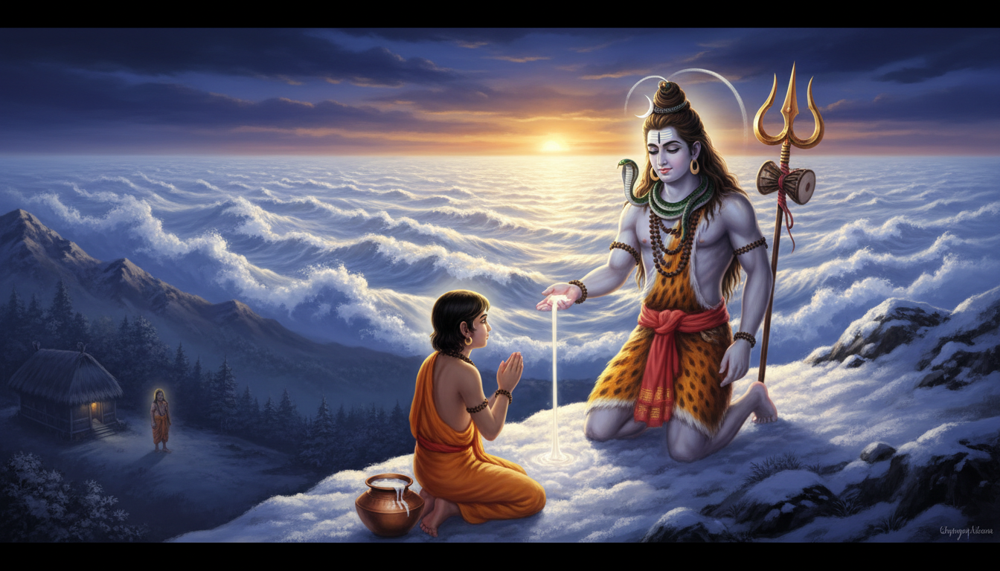

एक जातक ऐसा आता है जिसकी शिकायत सुनकर पहले तो कृतघ्नता जैसी लगती है।

उसके घर में अन्न है। वेतन है। गाड़ी है, किराए का मकान है, चलने वाला पंखा है। और फिर भी उसके जीवन की हर वस्तु में एक विकल्प का स्वाद है — वह नौकरी जो लगभग सही नौकरी है, वह विवाह जो लगभग सही विवाह है, वह संतान जो तेजस्वी है पर वह संतान नहीं जिसका वचन कुंडली ने दिया था, वह धन जो ठीक महीने भर का खर्च बनता है और एक रुपया अधिक कभी नहीं।
उसने उपाय किए हैं। शनिवार को भोजन कराया है, मोती धारण किया है, वर्षों तक सोमवार का व्रत फल-जल से रखा है। और वह बिना किसी आत्म-करुणा के कहता है — व्रत आदत बन गया, और आदत ने देना बंद कर दिया।
यह साधारण रूप से कमजोर चंद्रमा नहीं है। कमजोर चंद्रमा कोमल मन देता है, लिपटी हुई माता देता है, अपना ही मौसम न सँभाल पाने वाला वक्ष देता है। यह उससे अधिक सटीक बात है। यह वह कुंडली है जिसमें रस उपस्थित है और स्रोत नहीं — जहाँ जातक निरंतर भोजन पाता है और कभी पोषण नहीं, क्योंकि जो कुछ मिलता है वह उस वस्तु का विकल्प है जो वास्तव में चाहिए थी।
परंपरा में एक ऋषि हैं जो ठीक इसी अवस्था में, इसके सबसे निचले बिंदु पर जन्मे, और जिन्होंने इसे विकल्प की और मात्रा माँगकर नहीं सुधारा। उन्होंने इसे विकल्प को ठुकराकर सुधारा, और फिर मूल वस्तु लेने पर्वत पर चले गए।
उनका नाम है उपमन्यु — उप + मन्यु, "प्रबल उत्साह वाला", वह जिसका तप तीव्र है। वे शिव के भक्त, गणों के अधिपति, और — यह बात लगभग कोई प्रयोग नहीं करता — उस दीर्घ उपदेश के वक्ता हैं जो शिव-पूजा के विधान का प्रामाणिक ग्रंथ है, महाभारत के अनुशासन पर्व में।
भाग एक: स्रोत क्या कहते हैं
1. व्याघ्रपाद के पुत्र
उपमन्यु के पिता हैं व्याघ्रपाद — "बाघ-पग", ऐसे ऋषि जिनका नाम ही एक कथा है, और जिनके वंश से उपमन्यु के माध्यम से ऋषि काम्बोज औपमन्यव हुए, जिनका नाम सामवेद के वंश ब्राह्मण (1.18) में गुरु-परंपरा के संवाहक के रूप में है। अर्थात् यह किसी पौराणिक कल्पना का पात्र नहीं, वैदिक आधार वाले वंश में स्थित ऋषि हैं।
2. मामा का आश्रम और दूध का प्याला
शिव पुराण सीधी कथा कहता है। बालक उपमन्यु को मामा के आश्रम भेजा गया — गायों वाला घर। वहाँ वह पेट भर दूध पीता है। घर लौटकर माँ से दूध माँगता है।
माँ दे नहीं सकती। घर निर्धन है। गाय नहीं, दूध नहीं, दूध के पैसे नहीं।
तब वह वही करती है जो निर्धन माताएँ सदा करती आई हैं, और जिसे परंपरा बिना नरम किए दर्ज करती है: वह उसके लिए विकल्प बनाती है। आटा और जल, या चावल का पानी — कुछ सफेद, कुछ जो प्याले में रखा जा सके और सही नाम से पुकारा जा सके। वह उसे पुत्र के सामने रखती है और कहती है कि यह दूध है।
और बालक उसे ठुकरा देता है।
यही समूचे विधान की कुंजी है, और यही वह विवरण है जिसे हर लोकप्रिय पुनर्कथन चमत्कार तक पहुँचने की जल्दी में छोड़ देता है। उपमन्यु दरिद्रता की शिकायत नहीं करता। गाय नहीं माँगता। वह उस सफेद द्रव को स्वीकार कर उसका अभिनय नहीं करता। वह विकल्प को विकल्प के रूप में पहचानता है, उसे मूल वस्तु का स्थान लेने नहीं देता, और इस प्रकार वही अकेली स्थिति बनाता है जिसमें मूल वस्तु माँगी जा सकती है।
यह देखकर माँ वह निर्देश देती है जो उसका वंश सदा के लिए बदल देता है: शिव की भक्ति करो। जो घर नहीं दे सकता, वे देते हैं।
3. बालक का अपना संकल्प — और उसका ठीक शब्द
ध्यान दें कि बालक क्या संकल्प करता है। वह धनी होने का संकल्प नहीं करता। भोजन मिलने का संकल्प नहीं करता। वह तप करने का संकल्प करता है ताकि शिव से दूध का सागर — क्षीर-सागर — माँग सके।
माँग का परिमाण ही पूरी बात है। निर्धन की प्रार्थना सामान्यतः अगले भोजन के लिए होती है, अगला भोजन मिल जाता है, और दरिद्रता बनी रहती है। उपमन्यु बीच की सारी सीढ़ियाँ छोड़ देता है और स्वयं भंडार माँगता है — न प्याला, न गाय, न गोशाला, वरन् वह सागर जिससे हर प्याला भरता है। माँ स्वीकृति देती है। वह हिमालय चला जाता है।
4. स्वयं बनाया शिवलिंग, और पाँच अक्षर
पर्वत पर बालक तीन काम इसी क्रम में करता है, और यही क्रम विधि है:
- वह लिंग बनाता है — अपने हाथों से, पर्वत जो देता है उसी से। प्रतिष्ठित मंदिर की मूर्ति नहीं। स्वयं निर्मित। परंपरा स्पष्ट है कि यह महत्वपूर्ण है: जिसके पास कुछ नहीं, उसका पहला लिंग वही बनाता है।
- वह पंचाक्षर आरंभ करता है — नमः शिवाय।
- वह रुकता नहीं।
पंचाक्षर पाँच अक्षर हैं — न, म, शि, वा, य — और शैव परंपरा उन्हें क्रमशः पाँच तत्वों में रखती है: न पृथ्वी, म जल, शि अग्नि, वा वायु, य आकाश। (ॐ जोड़ने पर यह षडक्षर हो जाता है — ॐ नमः शिवाय। सम्प्रदायों में क्रम में थोड़ा अंतर है; काशी और दक्षिण भारतीय आगमिक धारा ऊपर के क्रम पर सहमत हैं।)
इसका अर्थ अलंकारिक नहीं है। इसका अर्थ यह है कि यह मंत्र पूर्ण तात्विक परिपथ है — पृथ्वी, जल, अग्नि, वायु, आकाश — और जो जातक यह जाने बिना कि कौन-सा तत्व न्यून है, किसी एक ग्रह को ठीक नहीं कर सकता, उसे पाँच अक्षरों में पूरा तत्व-समूह मिल जाता है। नमः शिवाय किसी एक ग्रह से नहीं, उन सबके अधिष्ठान से है — इसीलिए यह पूरे उपाय-क्षेत्र में प्रयुक्त होता है, और इसीलिए यह उस कुंडली को दिया जाता है जो इतनी उलझी है कि एक ग्रह निर्धारित नहीं होता।
कार्य-विधान: यदि आप सूर्य के उपाय और शनि के उपाय के बीच निर्णय नहीं कर पा रहे, तो निर्णय करना छोड़ दें। पाँच अक्षर लें। पर उन्हें उसी प्रकार लें जैसे बालक ने लिए — अपने चुने या बनाए लिंग के साथ, उस स्थान पर जहाँ पहुँचना पड़े, और बिना कोई तिथि तय किए। अपने फ्लैट के पूजा-कोने में, कार्यालय जाने से पहले के दस मिनट में किया गया पंचाक्षर जप एक विकल्प है — और परंपरा पहले ही बता चुकी है कि उपमन्यु विकल्पों का क्या करता था।
5. मारीचि के भूत
बालक का तप जलने लगता है। और ब्रह्मांड की पहली प्रतिक्रिया वरदान नहीं है। वह बाधा है।
शिव पुराण कहता है कि मारीचि द्वारा भेजे गए अनेक भूत उसे सताने आए। यह पूरे ग्रंथ-समूह का उन कुछ सबसे उपयोगी प्रसंगों में है जो काम करने वाले ज्योतिषी के काम आते हैं, क्योंकि यह वह बात कहता है जिसे हर साधक पहचानता है और लगभग कोई नाम नहीं देता: बाधा ठीक उसी समय आती है जब उपाय काम करने लगता है। पहले नहीं। बाद में।
कुंडली की भाषा में यह ग्रह-बाधा है — ग्रह से नहीं, बाधक सत्ता से रुकावट — और यही वह चरण है जिसमें अधिकांश जातक चालीस दिन के व्रत को उन्नीसवें दिन छोड़ देते हैं। ग्रंथ कह रहा है कि क्रम सामान्य है: पहले इनकार, फिर प्रयास, फिर आक्रमण, फिर फल। उपमन्यु अविचल रहा। यही क्रियाविशेषण पूरा निर्देश है।
6. देवलोक में आग
बालक का तप इतना तीव्र हो जाता है कि स्वयं देवलोक जलने लगता है। देवता विष्णु के पास दौड़ते हैं। विष्णु शिव तक समाचार पहुँचाते हैं।
इस व्यवस्था को ध्यान से पढ़ें, क्योंकि यही विधि का तंत्र है। मनुष्य का तप, ठीक से और बिना रुकावट किया गया, ऐसा दबाव बनाता है जिसे स्वर्ग का प्रशासन अनदेखा नहीं कर सकता। देवता आवश्यकता पर उत्तर नहीं देते। वे ताप पर उत्तर देते हैं। इसीलिए परंपरा भाव की तीव्रता के ऊपर साधना की निरंतरता पर बल देती है: हजार दिन का ठंडा जप देवलोक को हिला देता है; नौ दिन का प्रबल जप कुछ नहीं हिलाता और दसवें दिन भुला दिया जाता है।
7. शिव इंद्र का वेश धरकर आते हैं — और अपनी निंदा करते हैं
अब परीक्षा। शिव शिव रूप में नहीं आते। वे इंद्र का वेश धरकर आते हैं और बालक को मनचाहा वर माँगने को कहते हैं।
उपमन्यु एक ही वस्तु माँगता है: शिव में भक्ति।
और शिव — अब भी इंद्र का मुख धरे — अपनी ही निंदा करने लगते हैं। वे बालक से कहते हैं कि इस देवता को छोड़ दे, कुछ ऐसा माँग जो रखने योग्य हो, और शिव के विषय में अनेक अपमानजनक बातें कहते हैं। यही वह अंश है जो भक्त को ग्राहक से अलग करता है। ग्राहक, जिसे वही देवता वर दे रहा हो जिसकी वह निंदा सुन रहा है, मोल-भाव करेगा। उपमन्यु मोल-भाव नहीं करता।
वह क्रुद्ध होता है। वह पंचाक्षर जपता है। वह हाथ में भस्म भरकर उस वेशधारी देवता पर फेंक देता है।
8. अघोरास्त्र, और शस्त्र भस्म क्यों है
ग्रंथ उस शस्त्र का नाम बताता है: अघोरास्त्र — अघोर का बाण, शिव का वह वाम मुख जो "भयानक नहीं" है। और कहता है कि शिव ने उसे कोमलता से बुझा दिया, फिर वेश छोड़कर अपने स्वरूप में खड़े हो गए।
दो बातें निकलती हैं, और दोनों व्यावहारिक हैं।
पहली, जिसके पास कुछ नहीं उसका शस्त्र भस्म है। तलवार नहीं, पुरोहित से खरीदा मंत्र नहीं, महँगा यंत्र नहीं। भस्म — विभूति — उसका अवशेष जो पहले ही भस्म हो चुका। यही एक वस्तु है जो निर्धन घर में सदा होती है, क्योंकि सब कुछ जाने के बाद यही बचती है। जिसके पास कुछ नहीं, उसके लिए परंपरा का उपाय "कुछ नहीं" के अवशेष से बना है।
दूसरी, भस्म उसी लिंग से ली गई थी जिसकी वह पूजा कर रहा था। यही पूरी तकनीक है। जो विभूति काम करती है वह दुकान का पैकेट नहीं; वह भस्म है जो उस रूप के संपर्क में रही है जिसकी आप सेवा कर रहे हैं। जब उपमन्यु ने हाथ भरा, वह धूल नहीं उठा रहा था। वह अपनी निरंतर पूजा का संचित अवशेष उठा रहा था, और उसे देवता पर लौटा रहा था — इसीलिए परंपरा इसे लौटाए हुए अर्घ्य का विधान कहती है।
9. वास्तव में क्या मिला
शिव प्रसन्न होकर तीन वस्तुएँ देते हैं:
- जितना दूध चाहे — क्षीर-सागर, उसका भोजन। गाय नहीं। भंडार।
- पवित्र विधि — पूजा की प्रक्रियात्मक जानकारी।
- ज्ञान — वह बोध जिससे विधि काम करती है।
और बालक गणों का अधिपति हो जाता है — गणम्त्य, शिव के अपने अनुचरों का सेनापति।
दान का क्रम देखें: भोजन, विधि, बोध — इसी क्रम में। और यही उस कुंडली की तीन न्यूनताओं का ठीक क्रम है जिसे यह विधान चाहिए। जिसे पर्याप्त मिलता है पर मूल कभी नहीं, उसमें सामान्यतः इनमें से एक की कमी नहीं होती। उसमें इनके संधि की कमी होती है: विधि है बोध नहीं, या बोध है विधि नहीं, या दोनों हैं और पोषण नहीं।
भाग दो: क्षीर-सागर को कुंडली की तरह पढ़ना
सागर पुरस्कार नहीं, स्रोत है
क्षीर सागर वह दूध का महासागर है जिस पर विष्णु शयन करते हैं — वह अनमथा कारण-भंडार जिससे समुद्र मंथन में चौदह रत्न निकले और अंत में अमृत। उपाय की भाषा में यह भंडार से पहले का भंडार है — वह अविभक्त समृद्धि जो किसी विशेष वस्तु से पहले है।
इसीलिए यह विधान पर्याप्तता के भीतर दीर्घकालिक अभाव के उस विशेष प्रतिरूप के लिए है: दूसरा भाव जो उत्पन्न करता रहता है पर संचय नहीं करता, एकादश का स्वामी जो लाभ देता है और लाभ तुरंत खर्च हो जाता है, अच्छी स्थिति में बैठा पर घिरा हुआ चंद्रमा, वह जातक जिसकी हर प्राप्ति पहले ही व्यय हो चुकी आती है।
वैदिक व्याकरण में दूध रस है — चंद्रमा का अपना द्रव्य, किसी वस्तु का सार, उसका आयतन नहीं। भस्म उसका पूरक है: सार निकल जाने के बाद का अवशेष, शनि का द्रव्य, इस बात का प्रमाण कि कुछ जला था। उपमन्यु का विधान दोनों प्रयोग करता है, और यही युग्म इसे उन चंद्र-शनि योगों तक पहुँचाता है जिन्हें कोई एकल-ग्रह उपाय छू नहीं पाता। भस्म बिना दूध का भावुकता है। दूध बिना भस्म का त्याग। दोनों मिलकर ग्रहण और दहन का पूरा चक्र हैं।
पाँच अक्षर, पाँच ग्रहों के विरुद्ध
चूँकि पंचाक्षर पाँच तत्वों को ढकता है, इसे मंत्र-देवता के स्थान पर तत्व के अनुसार ग्रहों से जोड़ा जा सकता है:
| अक्षर | तत्व | संबद्ध ग्रह | किसका उपाय |
|---|---|---|---|
| न | पृथ्वी | बुध, और स्वयं लग्न | देह, स्थिरता, प्राप्त वस्तु को धारण करने की क्षमता |
| म | जल | चंद्र, शुक्र | रस, माता, विवाह, "पर्याप्त है" का भाव |
| शि | अग्नि | सूर्य, मंगल | प्रतिष्ठा, पाचन, भोजन को बल में बदलना |
| वा | वायु | शनि, राहु | विलंब, बाधा, रुके हुए पदार्थ की गति |
| य | आकाश | गुरु | वृद्धि, अनुमति, वह अवकाश जिसमें लाभ हो सके |
जिसका सूर्य बलवान और चंद्रमा घिरा हुआ है, उसे अधिक शि नहीं चाहिए। उसे म चाहिए — और पूरे पंचाक्षर को बिना विचार सबको दे देने की प्रथा ही वह कारण है कि सोमवार के इतने वर्ष के व्रत कुछ नहीं देते।
भाग तीन: कार्य-विधान
1. इनकार — सबसे पहले
विधान वहीं से आरंभ होता है जहाँ कथा आरंभ होती है, और वह किसी पूजा से पहले आरंभ होता है।
कार्य-विधान: एक चांद्र मास तक विकल्प को पहचानें। इस प्रकार के हर जातक के पास एक विकल्प होता है: वह नौकरी जो इसलिए ली गई कि असली नहीं मिली, वह संबंध जो इसलिए चला कि असली उपलब्ध न था, वह पैकेट का भोजन जो इसलिए खाया कि पका हुआ समय माँगता है, वह स्क्रॉलिंग जो इसलिए हुई कि साधना मौन माँगती है। उसे लिख लें। फिर जो आपकी वास्तविक चाहत के सबसे निकट है, उसे खाना बंद करें। सबको नहीं। सबसे निकट वाले को। उपमन्यु ने सामान्य रूप से आटे-पानी का इनकार नहीं किया था। उसने उस प्याले का इनकार किया था जिसे दूध कहा गया था।
परंपरा मानती है कि इनकार माँग से पहले होना चाहिए, और जो विकल्प पीते हुए माँगता है उसकी माँग सुनी नहीं जाती — क्योंकि माँगने वाले ने अभी यह सिद्ध नहीं किया कि वह भेद पहचान सकता है।
2. प्रदोष काल — वह समय जो वास्तव में निर्दिष्ट है
यह वह समय-विवरण है जिसे अधिकांश उपाय-प्रथा छोड़ देती है, और यह स्कंद पुराण में असामान्य सटीकता से सुरक्षित है।
प्रदोष संध्या-काल है — शब्दशः प्र + दोष, "अंधकार से पहले" — और यह व्रत प्रत्येक पक्ष की त्रयोदशी को होता है, अर्थात् चांद्र मास में दो बार। पूजा का काल तीन घंटे: सूर्यास्त से डेढ़ घंटे पहले से डेढ़ घंटे बाद तक।
स्कंद पुराण का यह विवरण रुकी हुई पूजा की कथा है। विदर्भ के राजा सत्यरथ युद्ध में मारे गए; गर्भवती रानी भागी, सरोवर के किनारे पुत्र को जन्म दिया, और मगर से ग्रसित हुई। अनाथ राजकुमार को उमा नाम की ब्राह्मणी ने भिक्षा पर पाला। ऋषि शांडिल्य से पूछा गया तो उन्होंने वह निदान दिया जो आज की केस-फाइल से आ सकता है: राजकुमार का कष्ट कर्म-शेष है, और उसका विशेष कारण यह है कि पूर्वजन्म में सत्यरथ ने शिव की प्रदोष-पूजा बीच में रोककर एक मृत्युदंड का आदेश दिया और पूजा पूरी किए बिना भोजन किया।
शांडिल्य का उपाय था प्रदोष व्रत — और स्कंद पुराण उसका फल स्पष्ट कहता है: धन, अन्न, कुटुंब और भाग्य।
कार्य-विधान: प्रदोष इस विधान के क्षीर भाग का सही काल है, और यह महीने का वह अकेला काल है जिसमें गृहस्थ बिना अवकाश लिए पूरी पूजा कर सकता है। जिस दोष का यह उपाय है वह भक्ति का अभाव नहीं — वह रुकावट है। यदि आपकी साधना का इतिहास बीच में छोड़ने का रहा है, तो यह आपका व्रत है, क्योंकि इसका पूरा शास्त्रीय आधार अधूरी पूजा की मरम्मत है।
3. शनि प्रदोष — शनि-विशेष कुंडली के लिए
इसी व्रत का दूसरा, तीक्ष्ण रूप भी है। जब त्रयोदशी शनिवार को पड़े, वह शनि प्रदोष है, और शनि की बाधा के विरुद्ध विशेष रूप से प्रयुक्त अकेला प्रदोष यही है।
उज्जैन के महाकालेश्वर से जुड़ी क्षेत्रीय कथा उदाहरण देती है: राजा चंद्रसेन पर पड़ोसी शासकों ने शनिवार, त्रयोदशी के दिन आक्रमण किया। घेरा चलते हुए श्रीखर नाम का बालक और वृद्धि नाम का पुरोहित क्षिप्रा के तट पर शिव की प्रार्थना करने लगे। शिव प्रकाश-स्तंभ के रूप में प्रकट हुए, आक्रमणकारियों को पराजित किया, और नगर में स्वयंभू लिंग के रूप में स्थित हो गए।
कार्य-विधान: जिस कुंडली में शनि दूसरे, सातवें या दशम भाव को पीड़ित करे, उसके लिए शनि प्रदोष सही दिन और सही घंटा है, और उसका विशेष अर्घ्य है पंचाक्षर जप के साथ लिंग पर दूध डालना — क्षीराभिषेक — और अभिषेक का जल बाद में वृक्ष की जड़ में देना, घर में न रखना। शनि प्रदोष वर्ष में कुछ ही बार आता है; आने वाले वर्ष की शनिवार-त्रयोदशियाँ गिन लें और उन्हें नियत तिथि मानें। शनि नियोजित भक्ति पर उत्तर देता है, आवेशित भक्ति पर नहीं।
4. क्षीर-सागर व्रत — इक्कीस प्रदोष
उस दीर्घ प्रतिरूप के लिए — जिस घर में तीन पीढ़ियों से कभी अधिक धन नहीं रहा — परंपरा लंबा रूप देती है।
कार्य-विधान:
- अवधि: इक्कीस क्रमिक प्रदोष (लगभग साढ़े दस चांद्र मास)।
- व्रत: प्रत्येक प्रदोष पर काल से पहले एक सादा भोजन; सूर्योदय से पूजा पूरी होने तक दूध और दुग्ध-पदार्थ नहीं। व्रत दूध का है, और यह जानबूझकर है — आप उस वस्तु के लिए रिक्तता बना रहे हैं जिसकी माँग कर रहे हैं।
- लिंग: छोटा लिंग, जातक द्वारा चुना या बनाया, केवल इस व्रत के लिए, हर बार उसी स्थान पर पूजित।
- अर्घ्य: कांसे या ताम्र पात्र में कच्चा दूध, लगातार डाला गया — तीन छींटों में नहीं — पंचाक्षर के साथ। डालना एक पूरे १०८ जप से अधिक चलना चाहिए।
- माँग: प्रत्येक सत्र के अंत में एक बार, बालक के शब्दों में — "धन दो" नहीं, वरन् "स्रोत दो।" यही भेद विधान है।
- समापन: इक्कीसवें दिन दूध की खीर बनाकर किसी पराए बच्चे को, या बछड़े वाली गाय को खिलाएँ। उसे घर से बाहर जाना चाहिए।
खीर का घर से बाहर जाना औपचारिकता नहीं है। उपमन्यु की पूरी समस्या इससे आरंभ हुई थी कि दूध बाहर से आता था और भीतर उपलब्ध नहीं था। अंतिम कर्म दिशा उलट देता है।
5. भस्म-विधि — अघोरास्त्र
विधान का आक्रामक अर्ध भस्म है, और उसके नियम दूध से कठोर हैं।
कार्य-विधान: वह विभूति लें जो आपके ही लिंग पर रखी रही हो — खरीदी हुई नहीं, पैकेट की नहीं, एक बार दर्शन किए मंदिर से लाई हुई नहीं। प्रत्येक सत्र के बाद माथे और दाहिने कंधे पर थोड़ा तिलक लगाएँ। एक भाग ताम्र पात्र में व्रत की अवधि तक अलग रखें। अंतिम दिन यह संचित भस्म बहते जल में विसर्जित करें — न रखें, न धारण करें, न किसी को दें।
किसी भी स्थिति में भस्म-भाग किसी नामित व्यक्ति के विरुद्ध प्रतिशोध के भाव से न करें। अघोरास्त्र स्वयं शिव पर फेंका गया था, एक भक्त द्वारा, भक्ति की रक्षा के लिए — और शिव ने उसे कोमलता से बुझाया। चेतावनी उसी कोमलता में निहित है: यह शस्त्र केवल वहाँ अनुमत है जहाँ लक्ष्य आपकी अपनी बाधा है, और जो प्रतिद्वंद्वी पर इसे चलाता है वह वह कार्य कर रहा है जिसकी अनुमति ग्रंथ नहीं देता।
6. आर्द्रा — गोचर में देखने योग्य नक्षत्र
गोचर-कार्य के लिए रुद्र का नक्षत्र है आर्द्रा, शास्त्रीय योजना में राहु का स्वामित्व और स्वयं रुद्र का अधिष्ठान। आर्द्रा "आर्द्र" है, अश्रु और सफाई का तारा — और यह विधान इसी गोचर-चिह्न से जुड़ता है।
कार्य-विधान: जब गुरु या चंद्रमा आर्द्रा में गोचर करे, या आर्द्रा प्रदोष के दिन पड़े, तब किया गया क्षीराभिषेक गोचर-ऊर्जा को परोक्ष नहीं, साक्षात् ग्रहण करता है। शनि की साढ़े साती में या चंद्र-राहु योग वाले जातक के लिए वर्ष का सबसे प्रभावी एक कर्म है प्रदोष और आर्द्रा के संयोग पर किया गया दूध का अभिषेक।
भाग चार: विधान से पहले कुंडली पढ़ना
यह विधान इनके लिए है:
- केमद्रुम योग में या शनि/राहु से घिरा चंद्रमा, जिसे गुरु की राहत न मिले।
- पीड़ित दूसरा भाव या उसका स्वामी, जहाँ आय है और संचय नहीं।
- पूरे किए हुए व्रतों का इतिहास जिनका कोई फल नहीं निकला — यह विकल्प-साधना का चिह्न है।
- वे कुंडलियाँ जहाँ जातक "भोजन मिलता है, पोषण नहीं" का विशेष भाव बताता है।
यह विधान इनके लिए नहीं है:
- तीव्र संकट के उपाय के लिए, जहाँ घर अभी जल रहा हो — उसके लिए संबंधित ग्रह की लघु-शांति सही है, दस मास का व्रत नहीं।
- शोक के पहले वर्ष में, जहाँ इनकार का चरण आत्म-दंड जैसा पढ़ा जाएगा, विवेक जैसा नहीं।
- जो इक्कीस प्रदोष बिना रुकावट नहीं कर सकता। रुका हुआ क्षीर-सागर व्रत न करने से बुरा है: स्कंद पुराण का पूरा प्रदोष-सिद्धांत इसीलिए है कि रुकी हुई पूजा वही कर्म बनाती है जिसे पूजा हटाने आई थी। यदि पूरा नहीं कर सकते, तो एक प्रदोष ठीक से करें और साफ़ रुक जाएँ।
समापन: एक वाक्य जो रखने योग्य है
उपमन्यु को गाय नहीं मिली। धन नहीं मिला। उसे सागर मिला, विधि मिली, और बोध मिला — और यह सब तब मिला जब उसने उस प्याले का इनकार कर दिया था जो सफेद था और सही नाम से पुकारा गया था, उस पर्वत तक पैदल पहुँचा था, अपने हाथों से लिंग बनाया था, भूत भेजे जाने पर भी जप नहीं रोका था, और अपनी ही भस्म की मुट्ठी उस देवता पर फेंकी थी जिसकी वह पूजा कर रहा था।
इसलिए इस पूरे वर्ग की कुंडली के लिए परंपरा का नैदानिक प्रश्न यह नहीं है कि तुम्हारे पास क्या नहीं है। प्रश्न यह है: तुम अब भी क्या पी रहे हो और उसे दूध कह रहे हो?
Sources
No source URLs were returned by NotebookLM for this run.